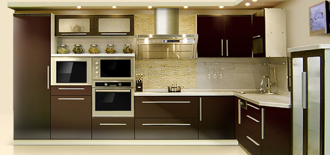

Рекомендации наполнения кухни

Каковы варианты планировки кухни?
Выбор планировки кухни зависит от размера и формы помещения. Самые распространенные типы расстановки кухонной мебели — в виде одного или двух рядов, угла и буквы «п». Угловой вариант подходит для маленьких квадратных помещений — подобная планировка дает возможность максимально использовать все имеющееся пространство. Если кухня представляет собой проходную комнату, мебель придется расставлять вдоль двух стен, параллельных друг другу. П-образный вариант подходит для больших помещений.
Есть еще так называемая островная кухня, в которой к угловому или П-образному гарнитуру добавляют центральный элемент (как правило, разделочный стол с раковиной или плитой). Такая планировка сейчас особенно модна и оптимальна для больших пространств.
Что такое правило золотого треугольника?
На любой кухне есть три стратегически важных центра: плита, раковина и холодильник. Эта троица составляет фигуру, называемую рабочим треугольником. Важно, чтобы его угловые элементы находились друг к другу достаточно близко и ничто не перекрывало подступы к ним. Идеальный интервал между вершинами — 1,2–2 м. Часто покупатели не учитывают этого, а потом жалуются, что кухней, которая так понравилась им в салоне, оказалось неудобно пользоваться. Между тем грамотно продуманная планировка может сократить наматываемый хозяйкой у плиты и мойки километраж наполовину и сэкономить треть времени нахождения на кухне.
Оптимально, если центром рабочего треугольника станет раковина. Холодильник впишется в угол, а плиту лучше разместить недалеко от обеденного стола.
В чем плюсы и минусы кухни на заказ?
Кухня, сделанная на заказ по вашим размерам, идеально впишется в габариты помещения — в ней учитываются неровности стен и пола, наличие труб, ниш и балок. Кроме того, появляется возможность укомплектовать такую кухню по собственному усмотрению, выбрать цвет, материал, фактуру фасадов, столешницы, стеновой панели. Также здесь имеется возможность разместить бытовую технику именно в тех местах, которые будут удобны лично вам. Индивидуальный дизайн-проект кухни может составить либо специалист фирмы, либо вы сами. В итоге вы получаете то, что изначально хотели.
К минусам мебели по индивидуальным проектам можно отнести более высокую стоимость. Второй недостаток такого варианта заключается в том, что вы не получите обстановку сразу — изготовления кухни придется ждать несколько недель.
Что нужно учесть при выборе мойки?
Мойка — важнейшая деталь кухонного интерьера, имеющая самые разнообразные формы: квадратные и прямоугольные, компактные и вместительные круглые, треугольные и овальные. Практичны мойки с двумя-тремя чашами разных размеров и форм, расположенными либо на одной линии, либо под углом друг к другу. Удобны мойки с одним или двумя крыльями, которые выступают в роли сушилки и рабочей поверхности. Самые популярные — чаши из нержавеющей стали. Они гигиеничные, жаро- и ударопрочные, но шумные. Модные модели из композитных материалов (гранитная крошка плюс акрил) могут иметь любую форму и цвет, но у них есть один недостаток — высокая цена.
По глубине удобны чаши размером 16–20 см, которые можно оснастить дополнительными элементами: разделочными досками, корзинами из пластика или металла.
Какая дверь подойдет для кухни?
Кухня — царство запахов, громких звуков, высоких температур, испарений, поэтому ее важно изолировать от остальных комнат в доме. Понадобится прочная дверь, стойкая к влаге и запахам. Дверь из массива убережет от шума, однако дерево обязательно должно быть покрыто огнестойким лаком. Подойдет для этого помещения и ламинированная конструкция — ее гладкая поверхность упрощает уборку. Неплохой вариант — изделие из пластика, а вот дверь из стекла или со стеклянной вставкой не защитит домочадцев от кухонного шума.
В маленькую кухню идеально впишется раздвижная дверь. Одно но — такая модель приемлема не для всякой планировки. Да и складная дверь-гармошка не слишком годится для кухни: она требует бережного обращения и не препятствует распространению запахов и звуков по квартире.
Какие материалы оптимальны для отделки стен, пола и потолка на кухне?
Потолок на кухне быстро загрязняется: на нем скапливаются копоть и жировые отложения — потребуется моющееся покрытие. Помимо этого потолочная отделка должна быть прочной, не выгорать на солнце и не поддерживать горение. Для кухни идеально подходят натяжные и подвесные потолки.
Пол на кухне лучше всего покрыть ламинатом, шероховатым керамогранитом, линолеумом с защитным слоем (полукоммерческий). Эти материалы не боятся ударов, влаги и легко моются.
Фартук возле мойки, рабочей поверхности и плиты неплохо отделать керамической плиткой, а остальные стены — плотными обоями (моющимися). Для стен можно использовать пластиковые панели, пробку, краску или декоративную штукатурку.
Чем руководствоваться при расстановке мебели и бытовой техники на кухне?
Чтобы кухней было удобно пользоваться, хозяйка должна предусмотреть множество мелочей.
Вместо рабочей поверхности со швами предпочтите монолитную — через швы проникает вода и крошки.
Правильная высота разделочного стола должна быть на 15 см ниже согнутой под прямым углом руки.
Рабочую зону лучше отделить от обеденной, оставив между столом и шкафами как минимум 1 м либо расположив ее на отдельном «острове».
Не ставьте плиту вплотную к стене или окну — стена будет нагреваться, а штора от газовой конфорки может загореться. Желательно, чтобы до стен с обеих сторон плиты оставалось по полметра.
Удобно и безопасно встроить духовку в шкаф на уровне глаз внутри одного из навесных шкафов. Размещая шкаф (особенно с ящиками) возле стены, оставляйте между ним и стеной интервал, иначе дверца не будет открываться полностью и ящики не удастся выдвинуть. Между верхними и навесными шкафами оставьте расстояние 50–70 см.
Из каких материалов лучше выбирать мебель для кухни?
Кухонная мебель должна быть не только красивой, но и функциональной и практичной, ведь она постоянно подвергается воздействию влаги, высоких температур, химических веществ. Желательно, чтобы мебель на кухне хорошо выглядела при минимуме усилий со стороны хозяйки, а уход за поверхностями был необременительным.
Если вы приобрели гарнитур из натуральной древесины, за ним придется постоянно ухаживать, контролируя уровень влажности в помещении. А вот фасады из МДФ (крашеные или покрытые пленкой), пластика, алюминия, стекла гораздо легче выдержат жизнь в агрессивной среде — они довольно стойкие к механическим воздействиям и легкие в уходе.
Столешница рабочей поверхности на кухне должна иметь водоотталкивающее покрытие, выдерживать удары упавших столовых приборов и жар горячей посуды. Хорошо зарекомендовали себя столешницы из камня (прежде всего искусственного), ДСП, пластика, металла.
Выбор материала зависит исключительно от суммы, которую вы готовы потратить на кухонную мебель.
Что нужно знать о внутреннем наполнении современной кухни?
Главный принцип организации кухни — удобство, когда каждый сантиметр ее площади используется как можно более рационально, а у каждого предмета есть свое место. Эту задачу решает продуманное наполнение кухни. «Умная начинка» включает в себя рейлинги, доводчики, подъемные устройства, поворачивающиеся полки-«карусели», «лифты», выдвижные и сетчатые полки, корзины, контейнеры. Поскольку внутреннее наполнение шкафов стоит недешево, следует сразу продумать, что именно из аксессуаров вам потребуется. Отказываться от современной начинки для кухонной мебели не стоит — она позволяет использовать внутреннее пространство шкафов практически полностью и делает кухню более удобной. К примеру, угловые поворотные механизмы типа «карусели» дают возможность использовать пространство труднодоступных шкафов. Открывающиеся вверх дверки навесных шкафов можно оборудовать подъемными механизмами типа «лифт», а организацию порядка в ящике можно поручить специальным разделительным вкладышам для ящиков.
Что учитывать при выборе кухонного стола?
Кухонному столу приходится выносить многое, ведь за ним не только собирается семья, чтобы позавтракать или поужинать. Обеденный стол используют в качестве дополнительной рабочей поверхности, на него могут поставить горячую посуду или использовать в качестве разделочной доски, его постоянно протирают влажной тряпкой. Поэтому выбирайте крепкую, прочную, надежную, износостойкую модель, не боящуюся ни высоких температур, ни химических веществ, ни механического воздействия. В качестве материала для кухонного стола подойдет кориан, натуральный камень, плитка, ламинат. Красивы модели со стеклянными столешницами и металлическим основанием, однако имейте в виду: стекло требует постоянного ухода.
Определяясь с размерами и формой стола, исходите из габаритов кухни — это может быть прямоугольная, квадратная, круглая, овальная модель. Для небольших кухонь удобны раскладные столы, которые можно увеличить в случае надобности. Дополнительно стол может быть оснащен колесиками и системами хранения.
Вместе со столом можно приобрести табуреты, стулья или эргономичные кресла, гармонирующие с кухонной мебелью.
Что покупать сначала — кухонную мебель или технику
Заказывая или приобретая кухонный гарнитур, нужно знать, какой техникой вы оснастите кухню, где будут расположены различные бытовые приборы и каковы их габариты. Во-первых, это позволит оборудовать в нужных местах розетки. Во-вторых, зная размеры техники, можно четко рассчитать величину полок и секций, а также вы гарантированно не столкнетесь с такой ситуацией, когда кухонную мебель привезли и расставили, а в пространство, оставленное для техники, буквально на полсантиметра не встает холодильник или микроволновая печь не умещается в отведенное ей место. Если не хочется раньше времени обзаводиться бытовыми приборами, есть два варианта: выбрать их в том же месте, где вы собираетесь приобрести кухню, либо четко определиться с моделями техники и передать ее габаритные размеры продавцу-консультанту в магазине, где вы покупаете или заказываете кухню.
Преимущества встраиваемой техники перед техникой соло?
Сегодня встраиваемая бытовая техника становится все популярнее. Во-первых, «встройка» красива и модна — она скрыта за дверцами шкафов, которые могут иметь самые разные цвета и фактуры. Соответственно, такой вариант подойдет к любому интерьеру.
Во-вторых, она гигиенична: техника, вмонтированная в кухонную мебель, закрыта дверцами шкафов и не пачкается, а общая столешница, под которую встраиваются приборы, не имеет щелей, в которые попадают крошки и вода.
В-третьих, «встройка» экономит площадь кухни: помещение не дробится множеством разных элементов, а сами приборы занимают минимум места.
В-четвертых, такая техника удобна — предметы можно устанавливать в любое место, в частности разделить между собой варочную поверхность и духовой шкаф, холодильник и морозильную камеру.
Основной минус встроенного варианта заключается в довольно высокой цене и дорогостоящей установке такой техники.